03 · Métricas de Negocio

Resaltado, lo que ya construiste en la ruta hasta este punto; en gris, lo que todavía viene.
⏱️ Tiempo: 30 min · 📍 Dónde: un notebook + SQL Editor · 🧰 Lo que usas: Metric Views, Notebooks, Cluster
¿Cuántas veces dos áreas presentaron "la tasa de churn" con números distintos? Aquí vas a definir las métricas del negocio una sola vez, gobernadas en Unity Catalog, para que SQL, dashboards y agentes usen la misma fórmula. Es el primer ejercicio en el que creas objetos en tu schema.
🎯 Al terminar vas a…
- Tener 3 metric views en tu schema:
mvw_churn,mvw_ingresosymvw_soporte - Consultar métricas por su nombre con
MEASURE() - Entender por qué una métrica gobernada evita errores
🧠 Conceptos de Databricks de este módulo
| Concepto | Qué es |
|---|---|
| Notebook | Una página con celdas de texto y de código. Ejecutas cada celda (o todas con Run all) |
| Cluster | El cómputo que ejecuta el notebook. Usamos fromzerotohero_workshop_cluster, creado por tu administrador |
| Widget | Un campo (arriba del notebook o en el panel Parameters) para escribir un valor (aquí, tu schema) sin tocar el código |
| Metric View | Una view de Unity Catalog que guarda la definición oficial de las métricas: dimensiones (por dónde cortar) y medidas (qué calcular) |
MEASURE() |
La función SQL para pedir una medida por su nombre: MEASURE(\Morosidad`)` |
💡 Analogía: una metric view es como la "receta oficial" de un plato. Cualquiera que la siga obtiene el mismo resultado; nadie inventa su propia versión.
✅ Antes de empezar
- Completaste el Ej. 1 y tienes tu schema creado
Paso 1: Crear tus metric views con el notebook
- En el menú lateral izquierdo, haz clic en Workspace
- Abre tu Git folder del curso (
from-zero-to-hero-business) → carpeta03 - Métricas de Negocio→ notebooknotebook_metric_views> ¿No tienes el Git folder? Impórtalo: Workspace → ⋮ (tres puntos, arriba) → Import → URL y pega >https://raw.githubusercontent.com/carolinaacarneiro/from-zero-to-hero-business/main/03%20-%20M%C3%A9tricas%20de%20Negocio/notebook_metric_views.py - Arriba a la derecha, haz clic en Connect y elige el cluster
fromzerotohero_workshop_cluster> Si el cluster está apagado, Databricks lo enciende solo: puede tardar de 3 a 5 minutos la primera vez - Haz clic dentro de la primera celda de código y presiona Shift + Enter. Aparece el campo Tu schema (arriba del notebook o en el panel lateral Parameters)
- En Tu schema, escribe tu schema (ej.:
ggarcia) - Haz clic en Run all (arriba a la derecha)
✅ Checkpoint: la última celda dice ✅ Metric views creadas en fromzerotohero.<tu_schema>.
El notebook crea tres metric views en tu schema, leyendo de la base compartida fromzerotohero.churn:
| Metric view | Medidas | Dimensiones |
|---|---|---|
mvw_churn |
Cancelaciones, Clientes, Tasa de Churn | Segmento, Plan, Mes |
mvw_ingresos |
Ingresos, Morosidad, Ticket Promedio | Segmento, Mes |
mvw_soporte |
Tickets, CSAT Promedio, NPS Promedio | Segmento, Canal, Categoría |
💡 Mira en el notebook cómo se define cada una (en YAML):
sourcees la tabla principal,joinslas tablas que se unen,dimensionspor dónde cortar ymeasureslas fórmulas.
Paso 2: ¿Por qué Metric Views? (antes × después)
Vamos a calcular la misma métrica, la morosidad por segmento (el % de facturas no pagadas), de dos formas.
Vuelve al SQL Editor (menú lateral izquierdo), elige el warehouse fromzerotohero_workshop_wh y ejecuta las dos consultas, una a la vez.
Sin metric view (SQL puro): tienes que acertar el join, la lógica condicional y el promedio:
SELECT
c.segmento,
ROUND(AVG(CASE WHEN NOT f.pago THEN 1.0 ELSE 0.0 END), 3) AS morosidad
FROM fromzerotohero.churn.hecho_facturacion f
JOIN fromzerotohero.churn.dim_cliente c ON f.id_cliente = c.id_cliente
GROUP BY c.segmento
ORDER BY morosidad DESC;
Con la metric view: la fórmula ya está gobernada, solo pides la métrica por su nombre (reemplaza <tu_schema>):
SELECT
`Segmento`,
ROUND(MEASURE(`Morosidad`), 3) AS morosidad
FROM fromzerotohero.<tu_schema>.mvw_ingresos
GROUP BY `Segmento`
ORDER BY morosidad DESC;
✅ Checkpoint: ambas devuelven Corporativo 0,069 · PyME 0,068 · Consumidor 0,068.
💡 La diferencia: en la metric view, la fórmula complicada (join +
CASE+ promedio) la escribió una vez quien la entiende, y todos la reutilizan sin riesgo de equivocarse. Cuanto más compleja es la métrica, mayor es la ganancia.Las comillas invertidas (
`) son necesarias porque los nombres tienen mayúsculas, espacios o acentos (ej.:`Tasa de Churn`).
Paso 3: Explorar en el catálogo
- En el menú lateral izquierdo, haz clic en Catalog
- Abre
fromzerotohero→<tu_schema> - Haz clic en
mvw_soporte: verás sus dimensiones y medidas con sus comentarios
💡 Estas metric views quedan disponibles para el dashboard (Ej. 5) y para los Genie Agents (Ej. 7).
🧯 Si algo sale mal
| Síntoma | Qué hacer |
|---|---|
Completa el widget o error de schema vacío |
Escribe tu schema en el campo Tu schema y vuelve a hacer Run all |
No aparece fromzerotohero_workshop_cluster en Connect |
Avisa al instructor (falta el permiso CAN ATTACH TO) |
METRIC_VIEW no soportado / error de sintaxis YAML |
El cluster debe tener un runtime reciente; avisa al instructor |
UNRESOLVED_COLUMN al consultar |
Revisa las comillas invertidas en los nombres: `Segmento` |
📌 Lo que aprendiste
- Una metric view guarda la definición oficial de las métricas en Unity Catalog
- Con
MEASURE()pides la métrica por su nombre, sin repetir la fórmula - Una sola fuente de la verdad para SQL, dashboards y agentes
El SQL completo de las metric views está en
metric_views.sql.